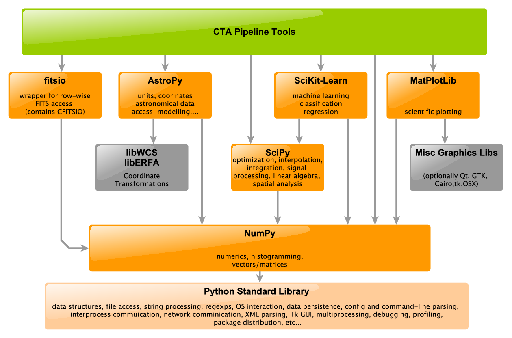

Support Libraries¶
In general, we will try to avoid re-implementing complex mathematical algorithms, and use instead a small set of well-tested, community supported packages. All packages chosen have large developer bases, and a wide community of users, ensuring long-term support.
The following are support libraries that are allowed when developing CTA Pipeline algorithms. Any new dependencies must be discussed with the software manager.

Math/Stats¶
A large variety of advanced math and statistcs functions can be found in the numpy (data structures and numerics )and scipy packages (advanced mathematics).
NumPy user guide : http://docs.scipy.org/doc/numpy/user/ (more high-level)
NumPy reference : http://docs.scipy.org/doc/numpy/reference/
SciPy user guide : http://docs.scipy.org/doc/scipy/reference/
SciPy reference : http://docs.scipy.org/doc/scipy/reference/index.html
Specific functionality:
scipy.stats: statistical models (pdfs, random sampling, etc) for discrete or continuous distributionsscipy.linalg: fast linear algebra operationsscipy.optimize: fitting and minimizationscipy.integrate: integration, including multivariate integrationscipy.signal: signal processingscipy.interpolate: interpolation of multi-variate datasetsscipy.spatial: spatial algorithms (clustering, nearest neighbors)scipy.special: special functions
these functions are all based on numpy.ndarray data structures,
which provide c-like speeds.
Multivariate Analysis and Machine Learning¶
SciKit-Learn, an extension of SciPy, provides very friendly and well-documented interface to a wide variety of MVA techniques, both for classification and regression.
Decision Trees
Support vector machines
Random Forrests
Perceptrons
Clustering
Dimensionality Reduction
training/cross-checks
etc.
Astronomical Calculations¶
AstroPy is the accepted package for all astronomical calculations. Specifically:
astropy.coordinates: coordinate transforms and framesastropy.time: time transformations and framesastropy.wcs: projectionsastropy.io: low-level FITS accessastropy.units: unit quantities with automatic propegation and cross-checksastropy.table: quick and easy reading of tables in nearly any format (FITS, ascii, HDF, VO, etc)astropy.convolution: convolution and filtering (built upon scipy.signal, but with more robust defaults)
subpackages of Astropy that are not marked as “reasonable stable” or “mature” should be avoided until their interfaces are solidified. The list can be found on the astropy documentation page, under the list current status of subpackages
Tabular Data Processing¶
- We support the following systems to process and manipulate tabular data (e.g.
an event list):
astropy.table: for small table manipulationspandas: for more complex manipulations (note it does not support columns that contain array-values, unlikeastropy.table, but the two are otherwise cross-convertable)pytables: for direct manipulation of tables in HDF5 files (faster than other systems for large on-disk files)
low-level FITS Table Access¶
FITS Tables can be read via astropy.table, or astropy.io.fits
(formerly called pyfits), however these implementations are not
intended for efficient access to very large files (As they access all
tables column-wise). In the case we want to load GBs or more of data
in a FITS table, the fitsio module should be used instead. It is a
simple wrapper for libCFITSIO, and supports efficient row-wise table
access. It is not yet included in Anaconda’s distribution, so must be
installed via pip
pip install --user fitsio
low-level HDF5 Table Access¶
For HDF5 input/output we support only pytables (which is generally used
inside other systems like pandas.
Model Fitting¶
We support only scipy.optimize, iminuit, and scikit-learn fitting
systems.
Graphics and Plotting¶
We support the following:
matplotlib(recommended for most cases)bokeh(for web-guis)
Parallelization and Speed-ups¶
Since execution speed is important in some algorithms (particularly those
called per-event), the speed of python can be a hindrance to performance.
The following methods to improve speed are allowed in ctapipe:
Use NumPy operations¶
One of the easiest way to speed up code is to attempt to avoid for-loops
(which are slow) by using numpy vector and matrix operations instead, as
well as libraries that use them internally (like scipy and astropy). This
requires no special support, but can sometimes be conceptually difficult to
achieve. If it is not possible, use one of the following supported methods.
Use Cython¶
cython is a meta-language that allows you to write c-code in python (with
some extra syntax), and also access all features of C/C++ as well as
automatic python bindings. In cython code, for-loops are fast, and there is
even support for parallelism (e.g. OpenMP) via cython.parallel for even
faster code. Cython code is allowed in ctapipe, and must be stored in *
.pyx files that need to be added to setup.py using cythonize (then you
always need to run setup.py build to make sure they are compiled whenever
they change)
Use Numba¶
numba allows you to automatically compile a python function via the LLVM
compiler backend the first time a funciton is called (“just in time
compilation”). The advantage over cython is that there is no special syntax,
and no compilation step ,however as a somewhat “black-box” it does not always
improve your code without some help. See the numba documentation for more
info.
Use C/C++ code and wrap it¶
This is only recommended if the other methods fail, or if there is existing code that is shared with other non-python-based systems, as it is the most complex. We support only the following c-binding systems for code within ctapipe:
ctypes (built into python, good for simple cases)
cffi (for more complex wrapping and building)
cython (can be used for wrapping as well as coding)
We do not recommend swig, as it introduces yet another language binding (the swig definition file) that includes both C and Python code, and is thus difficult to track and debug.